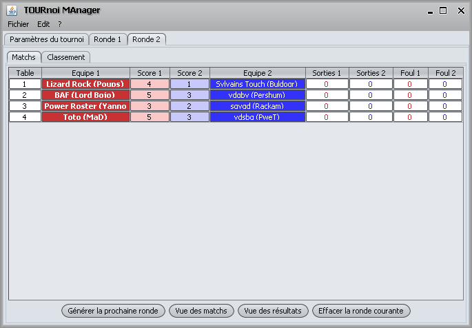

Pour effacer une ronde, il suffit de cliquer sur le bouton "Effacer la
ronde courante" qui est dans l'onglet de la ronde courante dans le sous
onglet "Matchs".

Si on veut effacer et regénérer la ronde suivante, il
suffit de cliquer sur le bouton "Générer la prochaine
ronde" dans l'onglet de la ronde précédente.